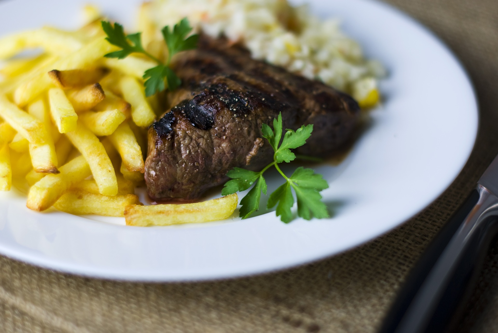

Köfte ve Patates Kızartması
Malzemeler:
-500 g orta yağlı dana kıyma
-1 adet rendelenmiş soğan
-2 dal taze nane
-2 dal maydanoz
-1 çay kaşığı karbonat
-Tuz, kimyon, karabiber
-2 adet patates
-Sıvı yağ

Tarifi:
1 - Köfte için, tüm malzemeyi bir kapta iyice yoğurun.
2 - Üzerini streç filmle kapatıp, buzdolabında en az 2 saat en fazla 1 gün kadar bekletin.
4 - Patates kızartması için kabuğunu soyduğunuz patatesleri ince elma dilimleri şeklinde doğrayın ve kızgın yağda kızartın.
5 - Köfte harcından yumurta büyüklüğünde parçalar koparın ve avucunuzda şekillendirin.
6 - Köfteleri kızgın yağda kızartıp, fazla yağının süzülmesi için kağıt havlu üzerine aktarın. Köfteyi kızarmış patatesle birlikte servis yapın.
7 - Dilerseniz, köfteleri domates sosu ile tatlandırabilirsiniz.
Afiyet olsun.